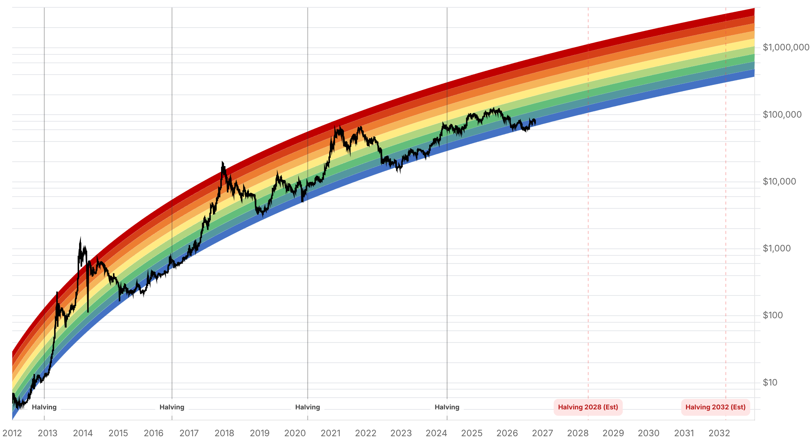

Reporte financiero
BTC cotiza en USD 82.784,94 en vivo (07:16 UTC), +0,94% frente al cierre anterior (USD 82.012,34) y rompe por fin la lateralización de USD 81.400-81.900 que venía reportándose desde hace tres días -el precio subió durante el fin de semana desde un mínimo de USD 80.700 el sábado por la noche hasta los niveles actuales, el tramo más alto desde el 13 de octubre-. El Fear & Greed Index acompaña el movimiento: salta de 53 (Neutral) a 59, cruzando de vuelta a 'Greed' por primera vez en cuatro días. No hay flujo de ETF nuevo que reportar -el viernes 16 de octubre sigue siendo la última rueda (los mercados de EE.UU. no operan en fin de semana), con el acumulado de octubre en aproximadamente USD -617M en salidas netas, prácticamente sin cambios respecto a lo reportado ayer-. Lo más nuevo desde el reporte de ayer es el contexto detrás del rebote: el viernes 16 hubo una ola de liquidaciones de derivados (USD 315,2M en 24 horas, 66,3% posiciones largas) en medio de una caída más amplia de activos de riesgo ligados a IA -el Nasdaq cedió 2,14%, CoreWeave se desplomó 12% por dudas sobre su deuda, y mineras de Bitcoin que alquilan capacidad a IA (Hut 8, IREN, Cipher Mining) cayeron ~6%-, pero BTC cayó menos que el Nasdaq y ya recuperó el terreno perdido. Binance describió la caída como 'un shock de sentimiento, no una ruptura estructural'. También es nuevo: la Corte Suprema del Reino Unido (High Court) falló el 12 de octubre que la ley china rige los reclamos de propiedad sobre los 61.000 BTC (~USD 5.000M) incautados en 2021 al esquema Ponzi de Zhimin Qian -una resolución que favorece al gobierno británico sobre las víctimas chinas del fraude, aunque los abogados de las víctimas están apelando y la corte todavía no decidió quién se queda con los fondos-. El resto de los ejes no tiene novedad relevante: Strategy/Saylor sigue en 848.250 BTC sin compra nueva; el plazo de Blumenthal a Cantor Fitzgerald por su vínculo con Tether vence en 4 días (23 de octubre), sin respuesta pública todavía; y la Clarity Act sigue estancada desde el fracaso de cloture del 15 de septiembre, con un analista de Charles Schwab advirtiendo que el proceso legislativo cripto podría demorarse aún más si las elecciones de medio término cambian el equilibrio del Senado.
El precio tocó un mínimo de USD 80.700 el sábado por la noche sin un catalizador claro, rebotó a USD 82.184 el domingo temprano y sigue subiendo hasta los USD 82.784,94 actuales (07:16 UTC, +0,94% vs. cierre anterior) -el nivel más alto desde el 13 de octubre, rompiendo la banda de USD 81.400-81.900 que había contenido el precio los tres días previos-. El Fear & Greed Index subió de 53 a 59, cruzando de 'Neutral' de vuelta a 'Greed' por primera vez en cuatro reportes.
El viernes 16 de octubre, CoinGlass registró USD 315,2M en liquidaciones de derivados en 24 horas (66,3% posiciones largas), coincidiendo con una caída más amplia de acciones tecnológicas: el Nasdaq Composite cedió 2,14%, CoreWeave se desplomó 12% por dudas sobre su deuda, y mineras de Bitcoin con negocio de hosting para IA (Hut 8, IREN, Cipher Mining) cayeron alrededor de 6%. BTC cayó menos que el Nasdaq en la misma sesión, y CoinDesk midió una correlación de 20 semanas de apenas -0,41 con el Kospi -un vínculo débil, no prueba de causalidad directa-. Catherine Chen, de Binance, calificó la caída inducida por inflación como 'un shock de sentimiento, no una ruptura estructural'. Glassnode mantiene su lectura de que la venta por pérdidas del jueves 15 cerca de USD 80.000 'puede marcar un piso local', citando el True Market Mean (costo base promedio del mercado) en la zona de USD 77.500-78.000 como soporte de referencia.
El juez Mark Turner de la High Court de Inglaterra falló el 12 de octubre que la ley china -no la inglesa- debe regir los reclamos de propiedad de las víctimas sobre los más de 61.000 BTC (entre GBP 3.800M y 5.000M) incautados por la Policía Metropolitana de Londres a Zhimin Qian, responsable de esquemas Ponzi en China entre 2014 y 2017. La diferencia es relevante: la ley inglesa habría permitido a los ~16.000 inversores chinos defraudados reclamar derechos de propiedad sobre el Bitcoin en sí -y su revalorización de la última década-, mientras que la ley china limita su recuperación al capital original más intereses, lo que en la práctica fortalece la posición del gobierno británico para quedarse con una porción significativa. La corte todavía no decidió la titularidad final; los abogados de las víctimas están apelando el fallo.
Al ser sábado y domingo, los ETF spot de BTC en EE.UU. no tuvieron sesión el 17 ni el 18 de octubre -la última rueda sigue siendo el viernes 16 (USD -82,4M, 87% concentrado en IBIT). El acumulado de octubre en las 12 ruedas transcurridas se mantiene en aproximadamente USD -617M en salidas netas (vs. los USD -614,7M reportados ayer, diferencia menor de redondeo entre proveedores de datos), sin que haya una nueva cifra que cambie la lectura: octubre sigue siendo, por ahora, un mes de salida neta de capital institucional.
Bitcoin.com News actualizó los niveles técnicos el 18 de octubre: soporte en la zona USD 80.000-81.000, resistencia en USD 83.000-84.000, con el RSI diario en 48-49 (sin control claro de compradores ni vendedores) -reemplazando los niveles de Decrypt citados en reportes anteriores-. La agenda de la semana trae varios catalizadores macro: PBI del tercer trimestre de China (19 de octubre, pendiente de publicación al momento de este reporte), permisos de construcción en EE.UU. (20 de octubre), solicitudes semanales de desempleo (22 de octubre) y PMIs preliminares (23 de octubre), todo antes del 'apagón de comunicaciones' de la Fed previo a la reunión del 27-28 de octubre. La inflación de septiembre (CPI) se confirmó en 3,7% interanual, el dato que sostiene la postura hawkish de la Fed ya reportada.
Strategy permanece en 848.250 BTC, sin compra nueva confirmada desde el filing del 12 de octubre. El plazo del senador Blumenthal para que Cantor Fitzgerald responda sobre su participación en Tether vence en 4 días (23 de octubre), sin pronunciamiento público de ninguna de las dos partes. La Clarity Act sigue estancada desde el fracaso de cloture del 15 de septiembre, sin fecha de un nuevo intento -Adam Lynch, de Charles Schwab, advirtió este fin de semana que el avance legislativo cripto en Washington podría demorarse más todavía si las elecciones de medio término cambian el equilibrio de poder en el Senado.
| Periodo | Valor |
|---|---|
| 13 oct | 83095.13 |
| 14 oct | 81562.49 |
| 15 oct | 82141.46 |
| 16 oct | 81500.8 |
| 17 oct | 81382.15 |
| 18 oct | 82017.6 |
| 19 oct (en vivo) | 82784.94 |
| Periodo | Valor |
|---|---|
| Fear & Greed | 59 |

“La venta por pérdidas del jueves 15 de octubre cerca de USD 80.000 puede marcar un piso local; el True Market Mean (costo base promedio del mercado) en la zona de USD 77.500-78.000 sigue siendo el soporte de referencia si la debilidad continúa.”
“La caída inducida por los datos de inflación fue un shock de sentimiento, no una ruptura estructural.”
El precio rompió la lateralización de tres días (USD 81.400-81.900) y recuperó los USD 82.700+, con el Fear & Greed volviendo a 'Greed' (59). Los niveles técnicos actualizados de Bitcoin.com News ubican el soporte en USD 80.000-81.000 y la resistencia en USD 83.000-84.000, con RSI diario en 48-49 -sin control claro de ningún lado-. La semana trae una agenda macro cargada (PBI de China, permisos de construcción en EE.UU., desempleo semanal, PMIs preliminares) antes del apagón de comunicaciones de la Fed previo a la reunión del 27-28 de octubre, lo que puede generar volatilidad de corto plazo en cualquier dirección.
El rango de QCP Capital para el Q4 (USD 80.000-90.000) sigue vigente, y el rebote del fin de semana acerca el precio al punto medio de esa banda. El CPI de septiembre se confirmó en 3,7% interanual, consistente con la postura hawkish ya reportada de la Fed (16 de 18 miembros del FOMC esperando otra suba antes de fin de año). Las salidas acumuladas de ETF en octubre (~USD 617M) siguen siendo la señal de demanda institucional más débil del mes, sin que el rebote de precio se haya visto acompañado todavía de un cambio a entradas netas.
Sin cambios en los objetivos de precio de largo plazo ya reportados en ediciones anteriores (Citigroup, Bernstein, Standard Chartered, Tom Lee, NYDIG, Armstrong). En el frente regulatorio/legal, el fallo de la High Court británica sobre los 61.000 BTC incautados (ley china aplica, apelación en curso) es un precedente a seguir por su tamaño (~USD 5.000M, ~0,3% del supply circulante) aunque no mueve el mercado de inmediato dado que la titularidad final sigue sin resolverse. La Clarity Act en EE.UU. sigue sin fecha de reintento, con el riesgo adicional -señalado por Charles Schwab- de que las elecciones de medio término compliquen aún más su aprobación. El plazo del 23 de octubre para la respuesta de Cantor Fitzgerald a Blumenthal sigue siendo el próximo hito concreto a vigilar en el eje Tether.
El precio rompió la banda de USD 81.400-81.900 pero todavía está dentro de la nueva zona de resistencia (USD 83.000-84.000) que identificó Bitcoin.com News. Con el RSI en territorio neutral (48-49) y sin entradas de ETF que confirmen demanda institucional, es prematuro tratar el rebote de fin de semana como una ruptura alcista consolidada.
La correlación de 20 semanas entre BTC y el Kospi medida por CoinDesk (-0,41) es débil, y BTC cayó menos que el Nasdaq durante la purga del 16 de octubre -pero la coincidencia temporal con la caída de CoreWeave y las mineras ligadas a IA muestra que los activos de riesgo siguen moviéndose en bloque ante shocks de sentimiento. Vigilar la deuda de CoreWeave y el gasto en IA como fuente de volatilidad cruzada, no como tesis de inversión en BTC.
Con el CPI de septiembre confirmado en 3,7% y la Fed habiendo subido tasas en septiembre con sesgo hawkish, posicionarse para un recorte sorpresa en la reunión del 27-28 de octubre como escenario base no está respaldado por la evidencia actual. El apagón de comunicaciones de la Fed esta semana reduce además la probabilidad de señales nuevas antes de la reunión.